2023 — Present
Research Fellow
Department of Electrical and Computer Engineering, National University of Singapore
Beyond Memory, Toward Intelligence
My research focuses on back-end-of-line-compatible oxide-semiconductor devices for monolithic 3D integration, high-density non-volatile memory, and compute-in-memory. I connect materials, device physics, and emerging memory architectures to develop energy-efficient electronic systems.
Current work includes oxide-semiconductor ferroelectric field-effect transistors, 3D ferroelectric vertical NAND, 2T0C DRAM, and device reliability and variability studied through electrical characterization, TCAD, and compact modeling.
Oxide SemiconductorsFerroelectric Devices3D MemoryCompute-in-MemoryReliability & Modeling
Publications: 43 journal · 52 conference · h-index: 22 · Citations: 1,500+
Google Scholar metrics as of August 2026.

2023 — Present
Department of Electrical and Computer Engineering, National University of Singapore
2019 — 2023
National University of Singapore · Supervisor: Prof. Xiao Gong
Dissertation: “Amorphous Indium-Gallium-Zinc-Oxide-Based Transistors for Emerging Non-Volatile Memory and Neuromorphic Computing Applications”
2014 — 2018
University of Electronic Science and Technology of China
* Equal contribution · # Corresponding author

2026 · VLSI Technology and Circuits

2026 · IEEE Electron Device Letters
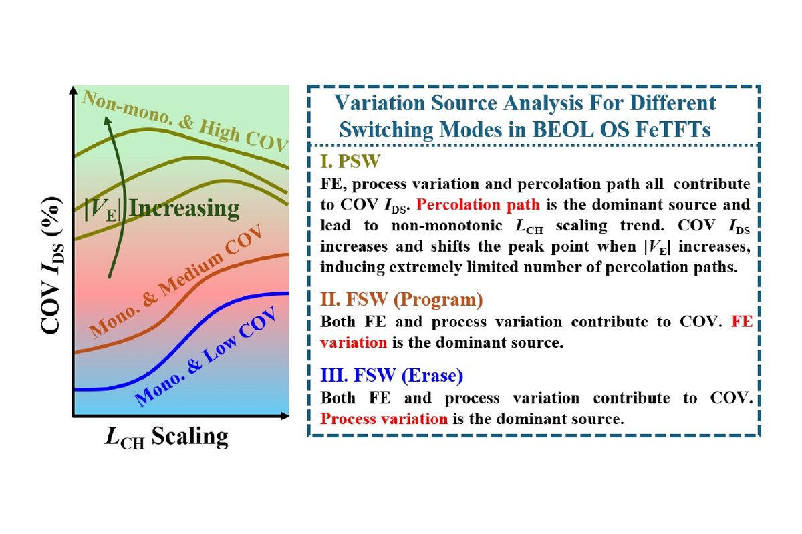
2026 · IEEE Electron Device Letters

2026 · ICCAD

2025 · IEEE International Electron Devices Meeting

2025 · IEEE International Electron Devices Meeting

2025 · IEEE Transactions on Electron Devices

2024 · IEEE Electron Device Letters
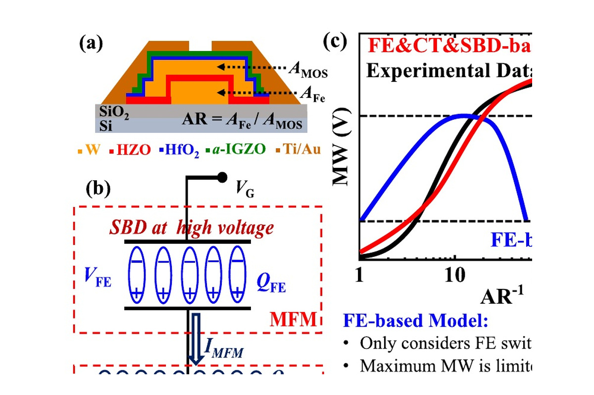
2024 · IEEE Transactions on Electron Devices
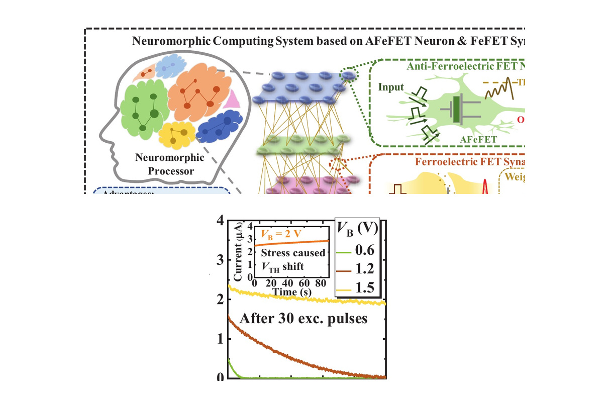
2022 · IEEE International Electron Devices Meeting
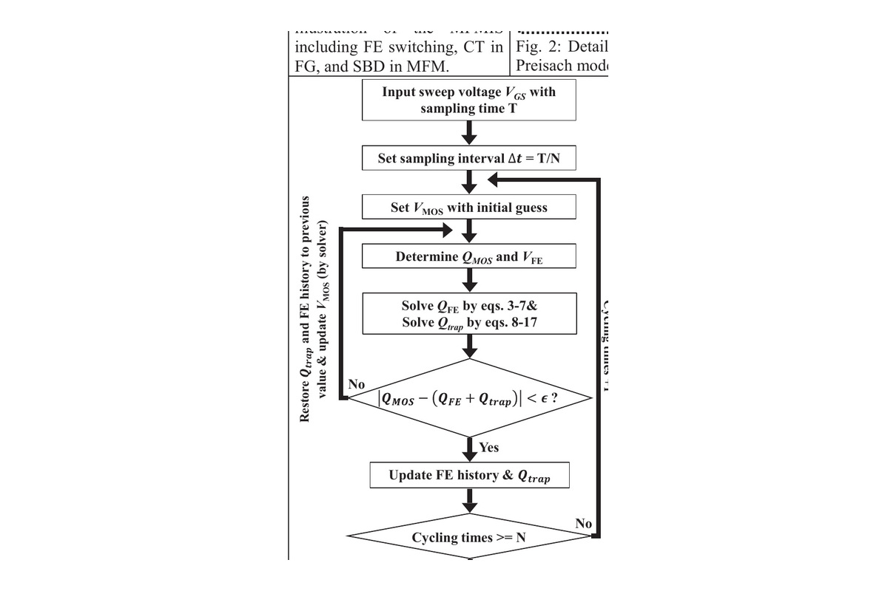
2022 · IEEE International Electron Devices Meeting

2022 · IEEE Transactions on Electron Devices
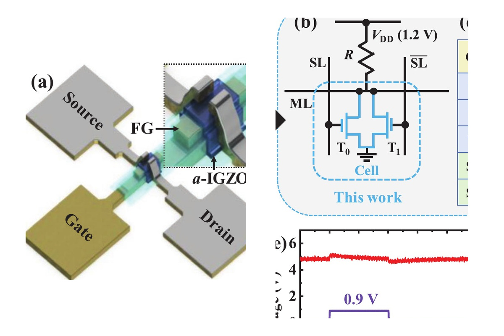
2022 · Advanced Electronic Materials
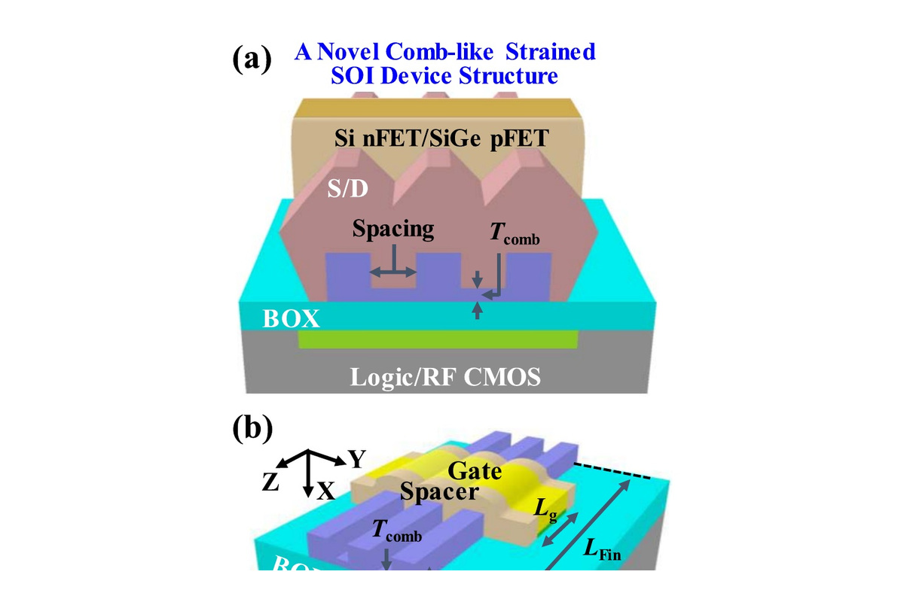
2022 · IEEE Transactions on Electron Devices
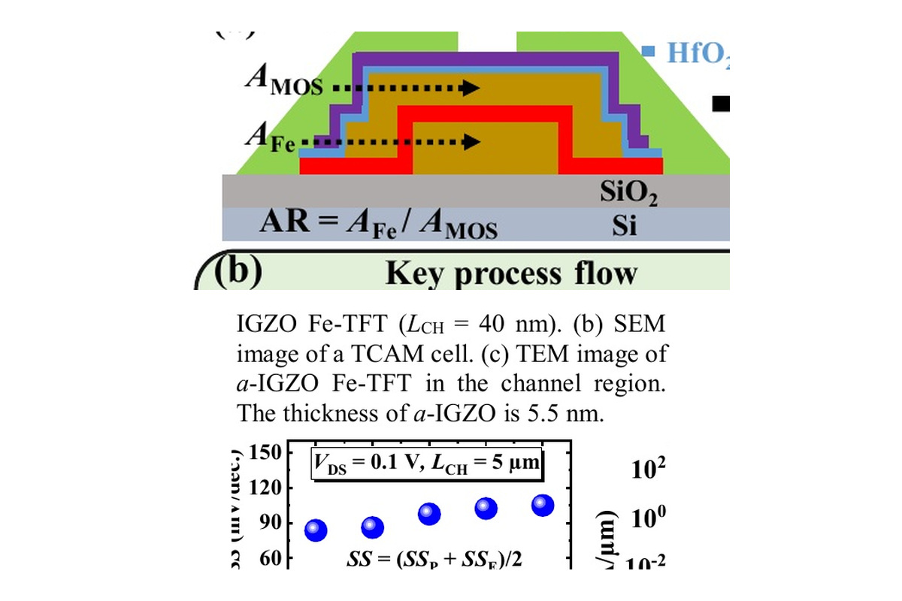
2021 · VLSI Technology
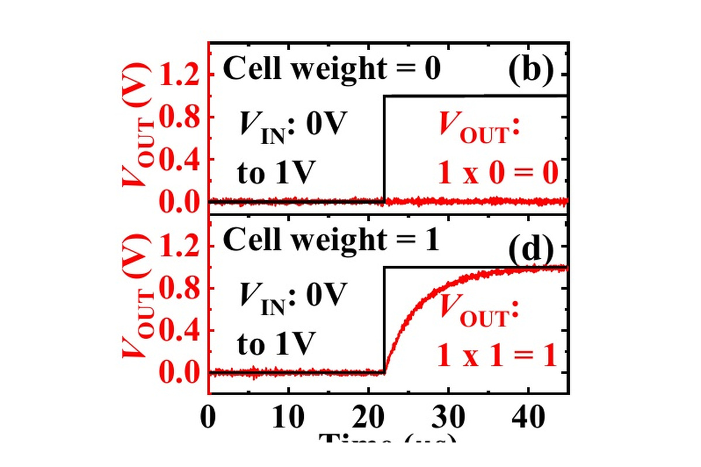
2021 · IEEE International Electron Devices Meeting
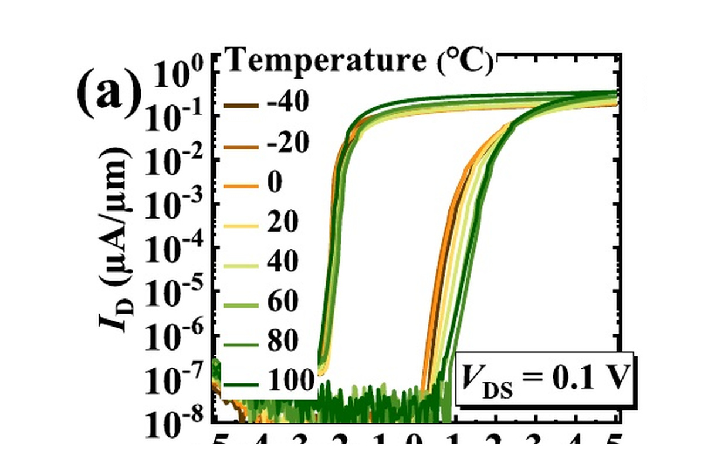
2021 · IEEE Electron Device Letters
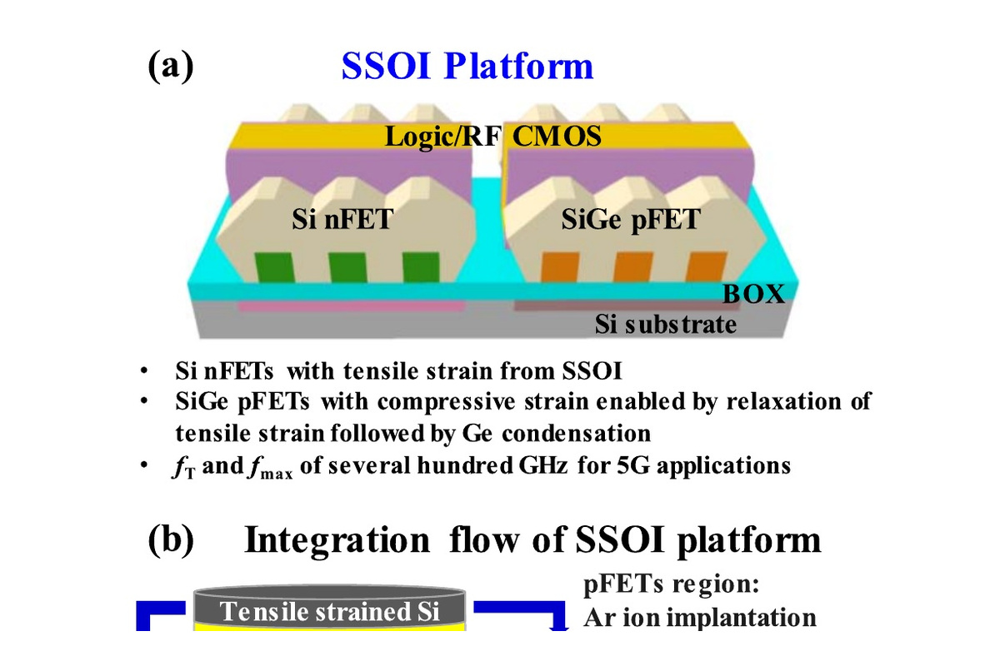
2021 · IEEE Transactions on Electron Devices
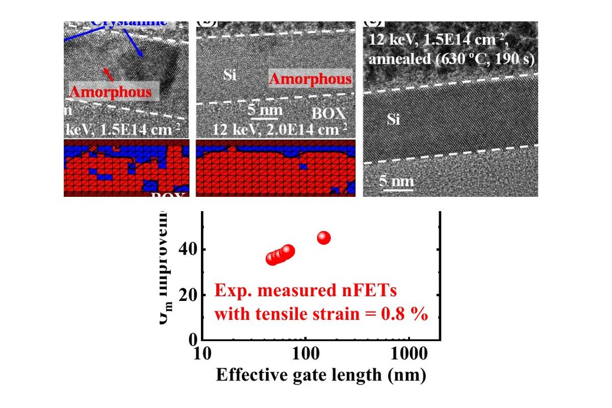
2020 · VLSI Technology
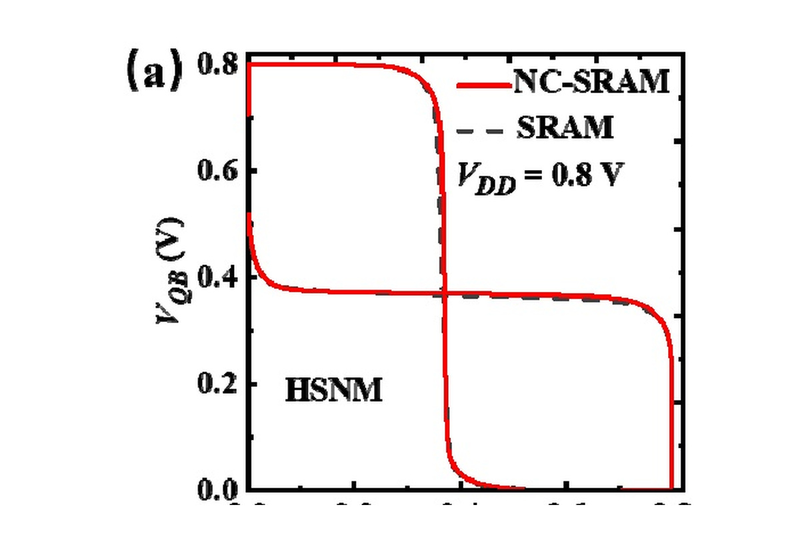
2019 · IEEE International Conference on IC Design and Technology
Peer Review
IEEE Electron Device Letters, IEEE Transactions on Electron Devices, IEEE Journal of the Electron Devices Society, Advanced Functional Materials, Advanced Science, Advanced Intelligent Systems, and others.